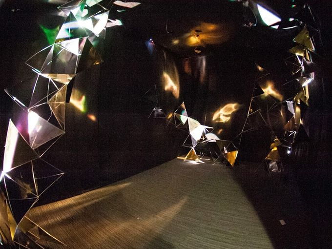

Matthew Briggs and Muharrem Yildirim were originally commissioned by Whitestone Reit at
Dana Park to create celestial structures as part of Influx Cycle 4. The work
aimed to emulate the cosmos
on a tangible scale through the interaction of space, light, and tetrahedral
construction inspired by Alexander Graham Bell and Buckminster Fuller. With
motors and code, the space at Dana Park evolved using randomized functions
to rotate the three pyramid structures comprised of reflective material. The
interaction between the structures and light created a dynamic space for the
audience.

Combing dynamic sounds with the modular components of celestial structures, I joined Matt and Muharrem's partnership to create celestial variations ,
an immersive,
generative sound and light installation. Matt created several small, erratic, tetrahedral
structures from the aluminum wireframe pyramids with mirror board to cover the
room’s interior walls and ceiling. Via computationally controlled DMX lighting
protocol, these structures were lit with golden-hue, LED lights. Each light was mapped to a synthesized tone, and would follow the large envelope's ebb and flow. The reflections aimed to create a dynamic chiaroscuro
evocative of a phenomenological quality of spatial vastness.
The aforementioned tonessounds were drones based on mathematical relationships discussed
in the medieval concept of Musica Universalis , the harmony of the spheres. Eight 3" speakers were hung from the ceiling in 2x8 array. Using a technique called spatialization, we will dynamically direct different sounds
to particular speakers.
Because of the dynamic way in which the astrological data is transcoded into sound and light,
the drama of the performance will never repeat, creating a unique experience for all who enter
the room.
thumbnail photo by jeremiah toller